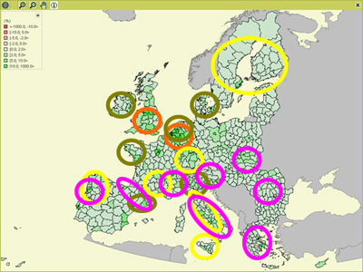

Approximately 50% of the land surface of the EU27 is agricultural land. In a
number of regions environmental problems related to agriculture occur. In figure
1 various environmental issues are presented in one overview map.

Figure 1 - map with combined potential
agri-environmental problems in 2030.
Conclusions that can be drawn from map 1 are that agri-environmental issues
such as abandonment, urbanization pressure, livestock pressure on the environment
and erosion are concentrated in regions in the EU15.
The Mediterranean countries face mainly the problems of land-abandonment and erosion, whereas Northwestern Europe has to deal with high pressure from urbanization and livestock. In Scandinavia abandonment of agricultural enclaves in large forest areas will lead to disappearance of open landscapes.